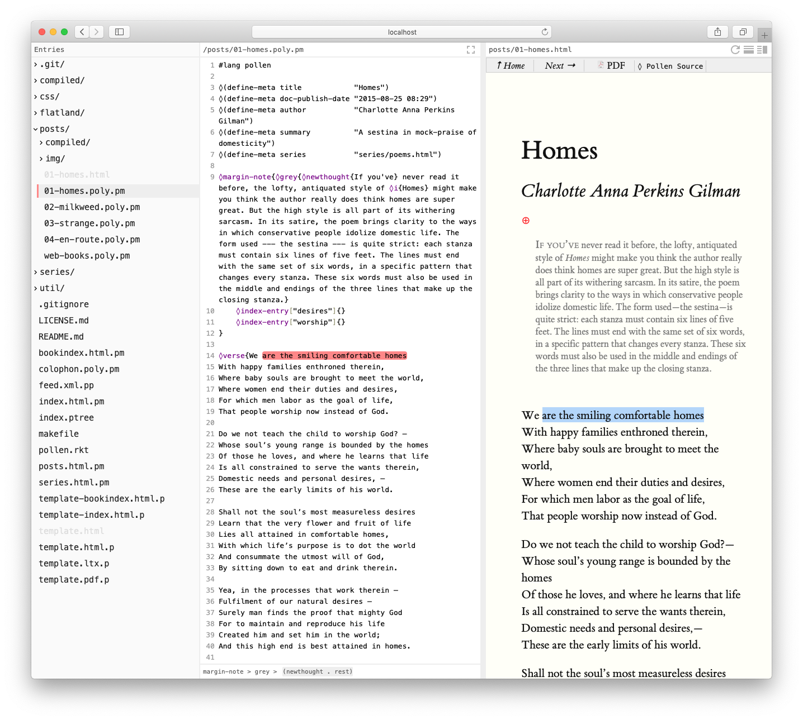
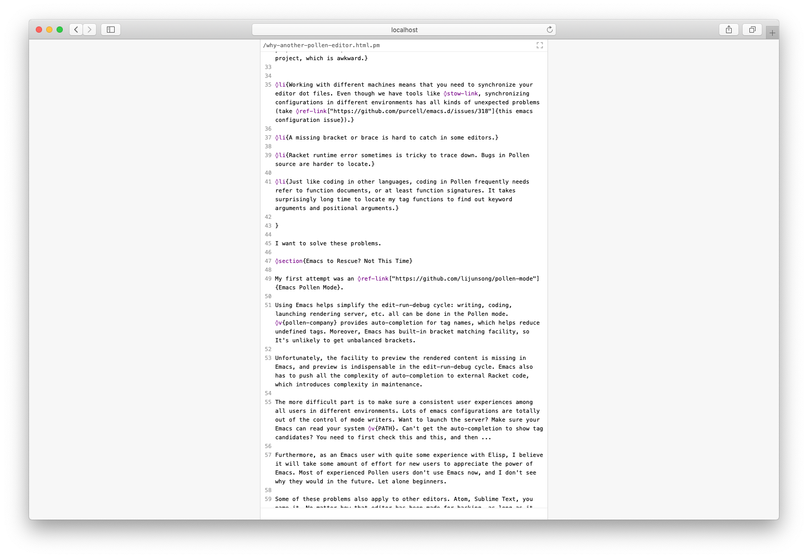

2 Use Pollen-rock
Working with Pollen-rock is similar to Pollen’s The project server.
2.1 Start the Server
To start, issue the following command in your terminal.
$ raco pollen-rock --start-dir ~/workspace/blog
And you’ll see the following output
Welcome to Pollen Rock 0.7.0 (Racket 6.12) |
Project root is /Users/user/workspace/blog/ |
Pollen Editor is running at http://localhost:8000/editor (accessible by all machines on your network) |
Ctrl-C at any time to terminate Pollen Rock. |
If --start-dir argument is not specified, the project root is the current working directory.
All machines on your network will be able to access your project directory. This is dangerous; other people who know your IP can remotely issue HTTP POST request to remove your project data. To limit the access scope to your own machine, specify --local in the argument.
2.2 The Editor Overview
By defeault, the editor is at http://localhost:8000/editor. You can change the port with -p.

In the editor, you can
Browse project files and directories
Edit files in the in-browser editor
Preview rendered Pollen source files
2.3 Use the Editor
The editor page has a sidebar listing files of the project. Clicking a file will open the file in the editor.
Pollen-rock editor has many supports on source code editing:
Supports syntax highlight of 100+ languages
Shows tag function signatures in Pollen source files
Reloads preview only when the Pollen syntax is correct
Prevents multiple clients from editing the same document
Has focus mode built in
The editor saves your changes automatically; it’s always safe to close the browser because the editor saves all changes before exiting (Different browsers will have different preference on force closing a tab, so what’s likely to happen is that your browser would pop up a window to warn you there are unsaved changes, if there are any).

2.4 Render
In the preview header, you can split the view horizontally or vertically. There is also a refresh button for sending force refresh to the server, and reloading the page.
When Pollen-rock starts to render a file, it actually does two things: It renders and shows the rendered page in the browser, and it watches the source code changes and reloads the rendered page.
There is one thing you should be aware of. Pollen-rock doesn’t know the dependencies of your rendered result; if the opened file file1.html.pm depends on style.css. Any changes behind the scene made to style.css are not going to trigger a reload.